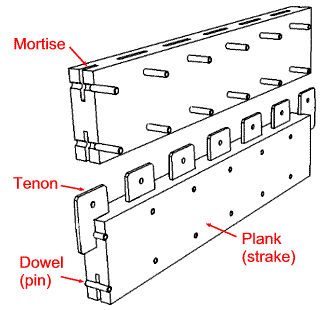
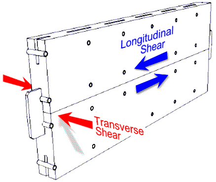
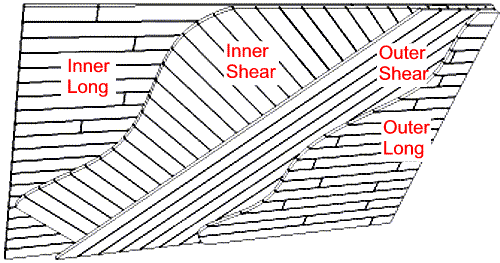

COPYRIGHT Tim Lovett © April 2004
.
.
.
Monocoque hulls use the shell of the hull to not only keep out water but also to cope with the stresses.
Included are the axial stresses of longitudinal tension and compression as a passing wave generates hogging and sagging forces. Associated with this bending action is the longitudinal shear - highest at mid height and lowest at the keel and roof. Shear is also produced when the hull is under twisting loads. Many other loadings can occur - such as wave slamming, lateral bending, secondary bending between ribs etc, but we will deal with the primary loads first.
MORTISE AND TENON PLANKING (Mediterranean)
Most ancient ships built in Asia and parts of Northern Europe began with an outer shell of planks (strakes) to which the internal framing (ribs) were added. This is the complete reverse of the familiar European construction of a timber hull. In shell-first construction, the planks must be held to each other somehow. In Northern Europe clinker (overlapping) planks were dowelled or nailed, in parts of Asia the planks were sewn together with rope. The ancient Greeks employed mortise and tenon joints. (Ref 1) . This elaborate system often included timber pins which locked the tenons in place. Early Greek ships (4th century BC) were built with precision, but workmanship apparently deteriorated over the centuries. (Ref 1 p 208). With close fitting tenons, this system was ideal for eliminating plank shear - the primary cause of leakage in timber vessels.

Image Tim Lovett April 2004
Greek vessels were built with the precision of furniture joinery. Romans also followed this technique, which lasted into the Byzantine period (7th century AD). The wreck of the 4th century BC Kyrenia had planks that were 70 to 80mm thick. These were fixed to 80x100mm frames, barely larger than the strakes, which indicates the planking was structurally significant. Copper spikes (nails) were used to pin the planks to the frame. The Greek warship, the Trireme, had to be lightweight yet endure ramming impacts, so this form of precision construction was ideal. So precise that caulking was hardly needed, nor has any been found. (Ref 1 p209) . Planks were sawn - this is not a recent invention.
Image digitally enhanced after Ref 1 Fig 159 - after Ref 2.
Above: A plank from the wreck of the Grand Congloue (2nd cent BC). Ref 2 p 149-152. It is clear from this cross-section that these ancient shipwrights regarded edge jointing a primary consideration. Perhaps they were a little too keen, the strake has split through the area weakened by mortises, but the remnant certainly demonstrates how much emphasis was placed on tenon joiners.

Image Ref 1 Fig 160 after Ref 2
Above: Mortises from the Grand Congloue were 50 to 70mm long x 60 to 80mm deep, with not more than 100mm between them. Planks were 30 to 60mm thick and attached to 100x140mm frames spaced a mere 120 mm apart. This ship was around 23m long and used a double layer of planking.
Hull data from Mediterranean wrecks. 400BC to 400AD (Ref 1 Ch 10) |
|
|
Wood types |
Planking, frames and keel: Fir, cedar and pine. Also cypress, elm, alder. Oak for strength and hardness. |
|
Spikes |
Bronze spikes, Copper and iron (later). Bolts (not threaded) where the inside was hammered over like a rivet, or locked with a key through a cross hole. |
|
Strakes (planking) |
Thickness 35 to 100mm (1.4" to 4"). Usually pine. Sometimes as thin as 20mm. Widths variable but at lest twice the depth of the tenons. Evidence of double planking and use of waterproof membrane, lead sheathing etc between layers. |
|
Tenons |
Usually 50mm (2"), up to 100mm (4"). Oak. Spaced less than 250mm (10") apart, sometimes staggered inboard and outboard so that almost no spacing exists. |
|
Frames (ribs) |
Inserted after the planks assembled. Usually 250mm (10") apart. Mostly lighter than the skeleton-first construction of the later Europeans (who typically had rib spacing equal to rib thickness). Strakes were typically pinned with timber dowels (tree nails) followed by a bronze spike through the center which was sometimes clenched where it protruded at the other end. Wide variety of timbers. |
|
Keel |
Oak used for vessels that were hauled out of the water (e.g. Triremes). Variety of timbers. |

Image Tim Lovett April 2004
Hogging and sagging causes longitudinal shear between planks, but the mortise is ideally designed to counter this action. Wave slamming could cause transverse shear which is also resisted through the tenon. As an additional precaution, the tenons were pinned, which gives the joint tensile capacity - in addition to the attached framing. The entire hull built up in this fashion makes the timber sailing ship of more recent history look crude by comparison. The largest Trireme was a similar length to the ark. (420 ft or 128m long, with 4000 oarsmen, 2850 marines, 400 crew. Ref 3 p86). See also Compare ships
But is it too labor intensive? This method would certainly increase the labor content of the ark. But a secure and watertight hull is essential. Using practical limits on the handling of timbers, at least four layers of planks would be needed to achieve the minimum 300mm wall thickness for a 30m voyage limit. (Ref 4).
MULTI-LAYERED PLANKS (Chinese Junks)
In another area of the world, the Chinese reached ark-scale ocean going vessels using multiple layers of planking. For more average sized vessels, an aging ship was given a new lease of life by applying a waterproof membrane and nailing a new layer of planking over the old hull. After 6 or 7 layers it was time to retire the vessel. Somehow they managed to construct the extremely large junks described in their records. Once considered the exaggerated claims of some government scribe, discoveries such as a huge rudder post at a shipbuilding site have backed up the claim. It appears the layered approach may have been a means to achieve the necessary hull strength.
The flagships of Cheng Ho's fleet in the 1400's obtained lengths of 480 to 536ft (146 to 163m) using Huai units. Even longer if measured in Ming units, with quoted lengths of up to 600ft (182m). However, China's maritime prowess took a dive in the reign of Hongxi (1425) and Xuande (1426-1435) culminated in the Confucian based 'Ming Ban'. From then on the Chinese navy faded away and long distance voyages were abandoned. Junks remained smaller and Cheng Ho's ships were never to be repeated.
CROSS LAMINATION
Cross-laminated layers of planking can achieve a similar outcome, producing a structure similar to oversized plywood. The shear strength of plywood is a well known, making it useful as a bracing material in buildings. The construction of timber boats such as used by Australian surf-lifesaving clubs testify to the effectiveness of cross lamination.

Image Tim Lovett April 2004
A four-layer laminated hull wall shows continuous planks in the 45 degree shear layers not weakened by end joints. This would be the ultimate (and probably unnecessary) way to deal with shear. Timber dowels could be driven into pre-drilled holes in successive layers, while the pitch is applied as a sealant and adhesive. Mortise and tenon joints are not required, and spikes fix all four layers onto the vertical frames. The structural efficiency of this approach would exceed the mortise and tenon technique since a full plank cross-section is utilized. It is unlikely a stronger structure could be built using simple materials and a minimum of metal fasteners.
The difficulty with this method is in shaping a streamlined hull. Since Noah's Ark had to carry cargo in the open sea and not travel anywhere, a high block coefficient (rectangular prism shape) is very likely, provided seakeeping is not jeopardized.. This is quite a different situation to the slender racing hulls of the Greek Trireme.
Other issues include the detailing of bilge radius (if it exists in a substantial form) and lines of bow and stern. Planking in the keel would be predominantly longitudinal to counter the tensile stresses during sagging. Likewise the roof must contain enough longitudinal members to endure tensile loading of a vessel under hogging. Multiple layers pinned together with timber dowels would be a practical and quick way to tie adjacent planks into a single structure. Drilling holes and hammering pins is a lot faster than cutting out mortise holes, and no ancient shipbuilder ever had trouble drilling holes in a piece of wood.
Mortise & Tenon vs Cross Lamination in hull side wall. |
||
|
|
Mortise & Tenon |
Cross Lamination |
|
Processing |
Time consuming mortising operation |
Possibly more sawing than the mortised planks if thickness is reduced. However, it is possible that both methods could use 4 layers. |
|
Assembly |
Assembly could be time consuming |
45 degree difficult to access along length of plank |
|
Hull shape |
Good design freedom at bilge radius, but detailing of bow and stern is not advantaged |
Some limitations if planking was parallel sawn. Complex curves could be generated using shaped planks |
|
Strength |
Should be adequate, but the inefficiency of the stressed skin could raise the wall thickness above the 300mm recommendation. |
Near optimal design for shear load. |
|
Historic precedent |
Greek and Roman ships |
Not seen, possibly excessively novel. |
REFERENCES
Ships and Seamanship in the Ancient World; Lionel Casson 1971 Princeton Univ Press, NJ
l'Epave du Grand Congloue a Marseille, F. Benoit; XIV supplement a Gallia, Paris 1961
Ships and Seafaring in ancient times; Lionel Casson 1994 British Museum Press, London
Safety Investigation of Noah’s Ark in a Seaway; S.W. Hong et al: Creation Ex Nihilo Technical Journal 8(1):26–35, 1994. http://www.answersingenesis.org/home/area/Magazines/tj/docs/v8n1_ArkSafety.asp
The traditional Indonesian sailing vessel the Pinisi was built using blind trunnels (like dowels) between adjacent planks. The hull planking was laid up first - like most timber boats outside of the European frame-first method. http://www.kastenmarine.com/phinisi.htm